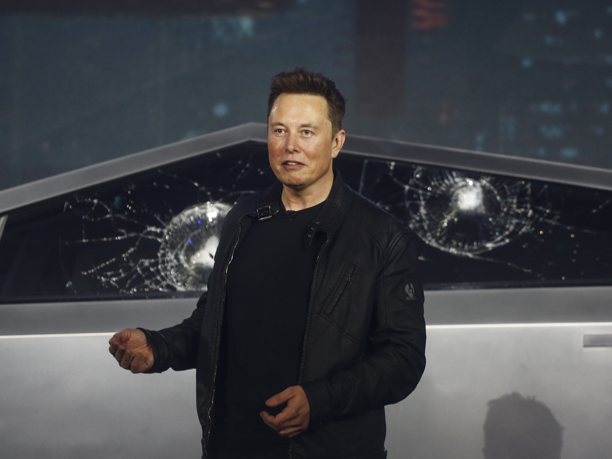

Elon Musk
Elon Musk is a visionary leader who continues to push the boundaries of what is possible with his innovative and ambitious projects at SpaceX and Tesla. He inspires others to believe that they too can achieve the impossible and make a positive impact on the world.

Elon Musk, CEO of SpaceX and Tesla, stands in front of a Falcon 9 rocket ready for launch.
Here's a time line of Elon Musk's life:
- 1971: Born in Pretoria, South Africa
- 1995: Begins studying business and physics at the University of Pretoria
- 1996:Starts and sells web software company Zip2 for $22 million
- 1999:Co-founds X.com, an online payment company which later becomes PayPal, and is sold to eBay for $1.5 billion in 2002.
- 2002: Becomes CEO of SpaceX
- 2004Becomes CEO of Tesla, Inc
- 2008:SpaceX launches Falcon 1, the first privately developed liquid fuel rocket to reach orbit 2012: SpaceX launches Dragon, the first privately-developed spacecraft to dock with the International Space Station
- 2012: SpaceX launches Dragon, the first privately-developed spacecraft to dock with the International Space Station
- 2016:Tesla unveils its first mass-market car, the Model 3
- 2017:SpaceX launches its first reusable rocket, the Falcon Heavy
- 2018:Tesla becomes the most valuable American car company.
- 2019:SpaceX launches its first privately crewed spacecraft, the Crew Dragon, to the International Space Station
- 2020: SpaceX launches its first satellite into orbit for Starlink, a satellite internet service
- 2021:SpaceX launches its first astronaut mission under NASA's Commercial Crew Program and SpaceX becomes the first privately owned company to send humans to space.
"When something is important enough, you do it even if the odds are not in your favor"